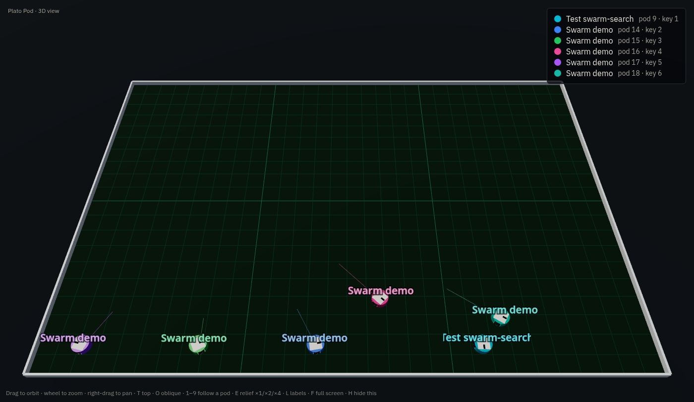
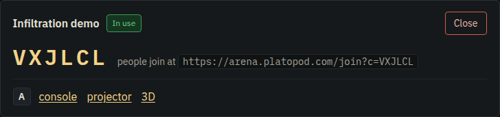
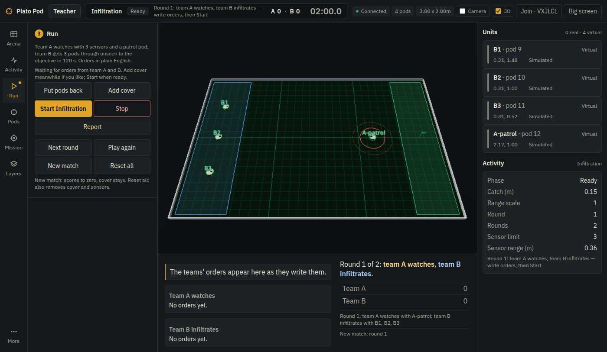
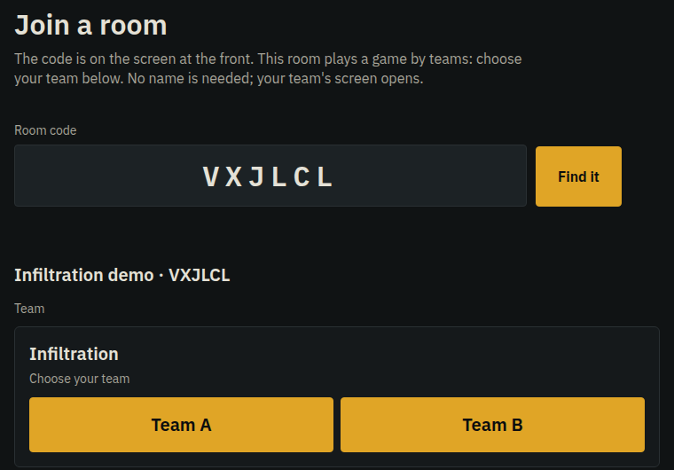
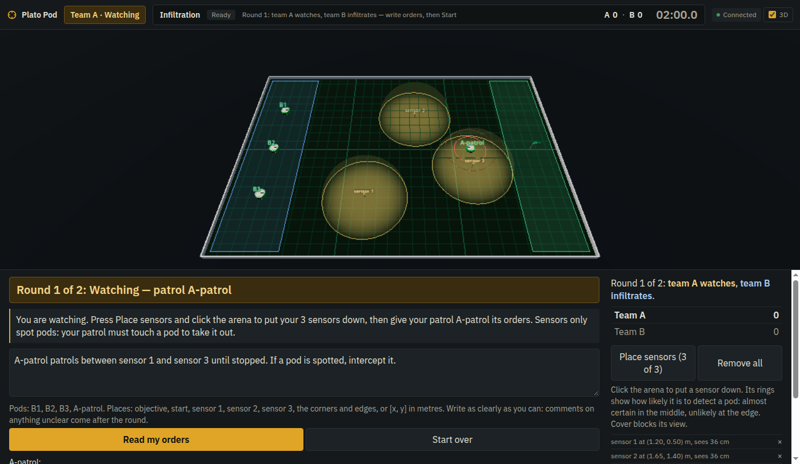
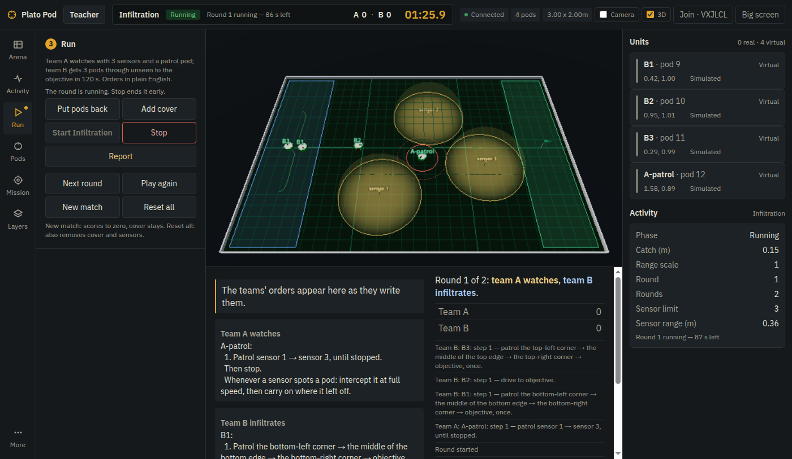
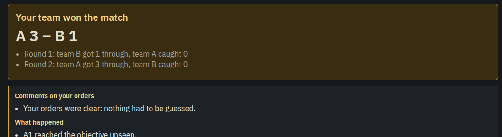
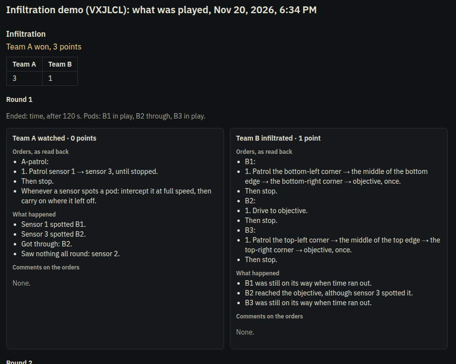

Try Plato Pod
Updated 20 November 2026 · Artem Lensky, UNSW Canberra
Also as a PDF to print or keep.
Plato Pod puts small robots on a shared arena that students drive from a browser, in plain English, or from their own Python code. Four demo rooms are open to anyone with the codes below: no account, no install. A teacher who wants rooms of their own asks for an invite.
The four demo rooms
Each room is open all the time and keeps its own setup. Join with its code at arena.platopod.com/join, or follow its link.
| Room | Course it was built for | Code | What you do | Teacher needed? |
|---|---|---|---|---|
| Problem solving: first programs in Python | ZEIT1307 Computational Problem Solving | TLQGNR | Drive a pod in a square, find out why it misses, fix it with feedback | No |
| Control engineering: PID line following | ZEIT3222 Control Engineering | GFYFYJ | Follow tape with a line sensor; tune P, I and D against a real delay | No |
| Artificial intelligence: a swarm that searches | ZEIT4150 Fundamentals of Artificial Intelligence | UUDPYD | Five pods search for hidden targets: no plan against a plan | No |
| Surveillance: outwit the sensors in plain English | ZEIT8205 Fundamentals of Surveillance Technologies | UBACYD | Two teams: one hides sensors, the other writes orders to get past them | Yes, to start each round |
The first three run from a Python notebook, at home or in class. The fourth is played live: a teacher at the console starts the rounds (see the Infiltration walkthrough below).
Try it in five minutes
All you need is a laptop with a browser and Python 3.10 or later, or a Google account for Colab.
- Download the room's notebook (links below) and open it in Jupyter, VS Code, or Google Colab (File, Upload notebook).
- Put your name in the second code cell (
MY_NAME). The room's code is already there. - Run the cells from the top. The first fetches the Plato Pod client from the server; the second joins the room, gives you a pod, and prints a link to watch it in 3D.
- Open that link beside the notebook and watch your pod do what your code says.
| Notebook | Room |
|---|---|
| first-programs.ipynb | Problem solving: first programs in Python |
| pid-line-following.ipynb | Control engineering: PID line following |
| swarm-search.ipynb | Artificial intelligence: a swarm that searches |
Your name keeps your pod: run the notebook again tomorrow with the same name and you get the same pod back. A pod nobody has used for 20 minutes leaves the room, so the room never fills up. A room takes 12 people at once (the swarm room 6, as each brings five pods).
Without a notebook, you can still look in: join from arena.platopod.com/join with the code and a name, and the page links to your pod on the table and in 3D.
Problem solving: first programs in Python (TLQGNR)
A first program that moves something real, then the first lesson in why programs that control things need feedback.
- Drive straight for 3 s at 0.1 m/s and measure how far the pod went.
- Turn a quarter turn by time: 0.8 rad/s for (π/2)/0.8 s.
- A square by time: four sides, four turns. It does not close.
- The same square by feedback: turn until the heading is right, drive until the distance is right.
- Your turn: any polygon, a spiral, a star, and back to where you started.
| Square | Missed its start by (measured on the server) |
|---|---|
| By time | 6.6 cm, heading off by 14° |
| By feedback on the pose | 1.6 cm |
The point for students: commands arrive late and unevenly and the pod speeds up and slows down, so a program that trusts the clock drifts, and one that looks at where the pod is does not.
Control engineering: PID line following (GFYFYJ)
Tape is drawn on the floor: an oval and a course with square corners and sharp bends. Each pod carries a line sensor, five reflectance cells under its nose that read 0 to 1 with noise, and reports where the line is across the pod (offset_m, positive to the left). Students write the controller.
- The pod drives itself onto the oval by feedback on its pose, at a place of its own so several students share the course.
- P only at 5 cm/s, then the same at 8 cm/s.
- D, smoothed: the textbook cure for snaking, and why it does not cure it here.
- I, capped against windup: the steady error on the curves.
- Your turn: the fastest lap, predicting through the delay, the course with sharp bends, the five raw cells.
| Controller (measured on the server) | Mean error | Line lost |
|---|---|---|
| P, kp = 40, 5 cm/s | 2.5 mm | never |
| P, kp = 40, 8 cm/s | 7.3 mm | never |
| PD, kp = 40, kd = 0.5 | 2.5 mm | never |
| PI, kp = 40, ki = 10 | 2.8 mm | never |
The lesson is a real one: a reading is a tenth of a second old when it arrives and commands cross the internet, so the delay, not the gains, limits the speed, and D and I need a better signal than this one to help. A teacher can draw new courses on the console's Mission sheet (below).

Artificial intelligence: a swarm that searches (UUDPYD)
Ten targets are hidden on a 3 m by 2 m floor; nobody, not even the console, shows where. One program commands five pods, each with a detector that reports a target within 15 cm. The swarm keeps one shared map of what it has found.
- Join, and add four more pods to your swarm (
arena.spawn()). They leave the room when your notebook closes. - No plan: each pod drives to random points for 90 s.
- A plan: the floor split into one strip per pod, each swept in lanes 25 cm apart.
- Your turn: compare the two, share out a strip when a pod fails, allocate strips by auction, and use what has been found to choose where to look next.
| Search (measured on the server) | Targets found | Time |
|---|---|---|
| Random walk | 4 of 10 | 90 s |
| Planned sweep | 9 of 10 | 61 s |
The sweep missed one target that sits where two pods' strips meet: a good first question for students.

Run it in your own classroom
While the service is new, rooms of your own are by invitation: write to a.lenskiyunsw.edu.au for an invite code. A room is yours alone, holds one arena per group of up to five students, and closes after 7 days nobody uses it.
- Sign up at arena.platopod.com with the invite code. My rooms opens.
- Type a name, choose how many arenas (one per group), and click Make a room.
- On the room card, note the six-letter room code. Students type it on the join page, or in a notebook.
- On the big-screen laptop, click console on the card. It opens signed in as the teacher; never share this link. Its Join button puts the code, the join address and a QR code on the screen.
- Optional: projector gives a clean full-screen view for a second screen; 3D the arena in three dimensions.
To set up the activities of the demo rooms in your own room:
- Lines for the line sensor: open the console's Mission sheet, choose Line, then press and drag on the map. The line's card sets the tape's width. Save keeps it; the ready-made Line following mission has the oval and the bends.
- A swarm: in the Arena sheet, set how many pods a student's program may drive (up to 8). The ready-made Swarm search mission hides the ten targets.
- ATAK, for military classes: an arena linked to a TAK server shows Show this arena on ATAK in the Arena sheet. Ask for it with your invite.


Surveillance: Infiltration in plain English (UBACYD)
One team hides sensors and patrols; the other tries to get its pods to the objective unseen. Two rounds of up to 120 s, roles swapped; about 15 minutes in all. Orders are typed in plain English and turned into a plan.
It is played live, with a teacher at the console: the activity is already chosen in the surveillance demo room, where the presenter runs the console. In your own room, steps 1 and 2 choose it. The steps and pictures below are a two-team match from start to report.
Teacher (big screen)
- Click Activity on the left rail, choose Infiltration. A box asks how many teams: choose 2 teams.
- Click Run, then Put pods out if the pods are not out yet (on an arena already drawn, choosing the teams puts them out). The amber button is always the next step. Four pods: A-patrol for the watchers, B1 to B3 for the infiltrators (in round 2, B-patrol and A1 to A3).



- Open arena.platopod.com/join (or scan the QR code on the big screen), type the room code, click Find it, then Team A or Team B. The team's console opens.
- The watching team clicks Place sensors, clicks up to three spots on the ground, then Place sensors again to finish. The other team cannot see them.
- Both teams type their orders and click Read my orders. Check the read-back says what was meant. Example orders:
- Watchers: "A-patrol patrols between sensor 1 and sensor 3 until stopped. If a pod is spotted, intercept it."
- Infiltrators: "B1 goes along the bottom edge to the objective. B2 goes to the objective. B3 goes along the top edge to the objective."


- Click Start Infiltration once both teams' orders show in the middle panel. If a team has sent none, the console asks before it starts. The round ends by itself at 120 s, or sooner once every pod is through or caught; the clock then stops on the time that was left.
- Click Next round: roles swap and the pods go back out. Repeat steps 4 to 6.
- After round 2 every screen shows the result. Report opens the match write-up (orders, rounds, scores) to print or save.
- New match to play again, or Reset all to clear.



What to know
- Devices: any laptop or tablet with a browser; phones work but are cramped. Notebooks need Python 3.10 or later, or Colab.
- Virtual pods: the hosted rooms are all virtual. The same code drives real pods on a classroom box with a camera.
- What students give: a name, nothing else; a nickname is fine. Students have no accounts. In the demo rooms a name and its pod are cleared after 20 minutes unused.
- The language model: orders written in plain English are sent to Claude, Anthropic's model, to be turned into a plan, which is read back before anything moves. Keep personal details out of orders.
- What is kept: a closed room's match reports (orders and results) are kept 90 days for its teacher.
- Busy times: a demo room takes 12 people at once (the swarm room 6). If it is full, try again a little later.
If something goes wrong
| Problem | Fix |
|---|---|
| Join page says the room isn't found | Check the code on the room card; the room may have closed after 7 idle days. Make a new room. |
| A sensor click didn't land | Click the spot again. On a raised wall a sensor sits on the wall's top. |
| Start asks: a team has no orders yet | Click Cancel and have that team click Read my orders, then Start again. |
| The read-back is not what was meant | Rewrite the orders more plainly, naming the pod and the place, and send again. |
| A screen looks stuck | Reload the page; it reconnects and keeps the team. |
| Everything is wrong | Reset all, then start again from Activity. |
| A notebook cannot reach the server, or cannot install websockets | A school network may block it: run the notebook in Google Colab instead. |
| A notebook says the room is full | Try again in a few minutes: names nobody uses leave after 20 minutes. |
If none of this helps, write to a.lenskiyunsw.edu.au.